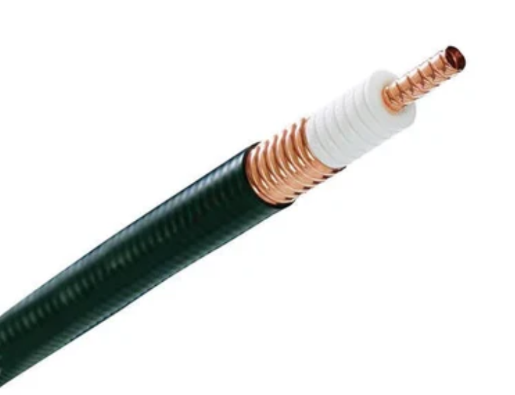

Tipos de Medios Guiados
Cable Coaxial
Consta de un alambre de cobre duro en su parte central, es decir, que constituye el núcleo, el cual se encuentra rodeado por un material aislante. Este material aislante está rodeado por un conductor cilíndrico que frecuentemente se presenta como una malla de tejido trenzado. El conductor externo está cubierto por una capa de plástico protector.

Usos Típicos
Se utiliza para la transmisión de señales de televisión y datos de internet a través de operadores de cable.
Se utilizó en estándares como 10Base2 y 10Base5 para conectar redes informáticas antes de la adopción del cableado estructurado.
Ventajas
- Buena resistencia a interferencias.
- Soporta mayores distancias que el par trenzado.
Desventajas
- Más caro que el par trenzado.
- Más difícil de instalar debido a su rigidez.
Capas del Cable Coaxial
Haz clic en las capas del cable para ver su estructura.